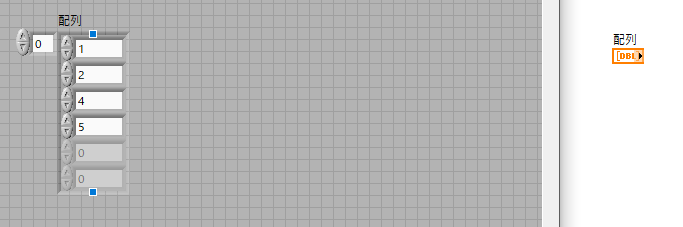
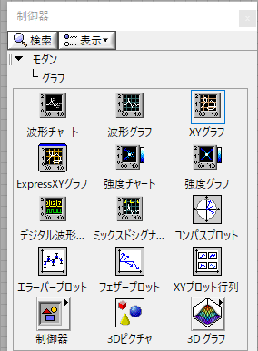
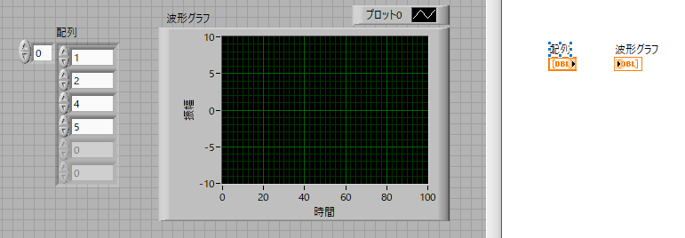
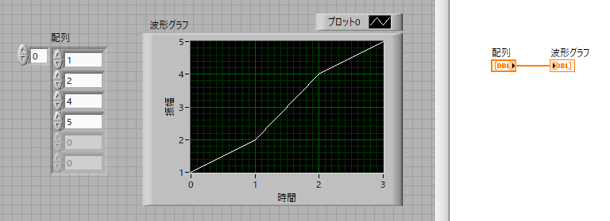
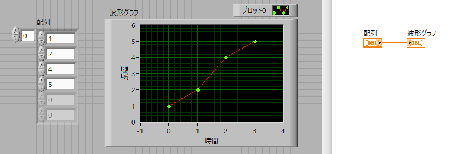

波形グラフ-01
LabViewにおいて一番シンプルでよく使われるグラフが
波形グラフ
です．
間隔が等しいデータの際に便利です，サンプリング周波数が決まっている場合など．
まずは適当な配列を作成しましょう．左にフロントパネル，右にブロックダイヤグラムを表示します．

次に，波形グラフ，を作成します．一番上の行の真ん中ですね．


あとは接続して実行すれば，

グラフが完了です．
図のデザインを変更したい場合は，
プロット形式：グラフアイコン上で右クリックして変更 or フロントパネル右上の”プロット０”を右クリック
横軸，縦軸：軸の最大値，最小値をダブルクリックして変更（右クリックして自動スケールのチェックを外す）
で可能です，こんな感じに．

この，波形グラフ，で重要なポイントは，
横軸が等間隔
である，ということです．
横軸も可変にしたい場合は，XYグラフが必要となります．
また，横軸は，０，１，２．．．と０から始まる整数となります．
等間隔のまま，値を変えたい場合を次のページで説明します．